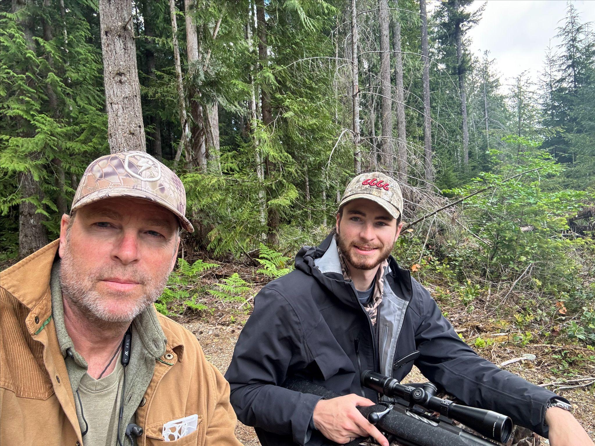
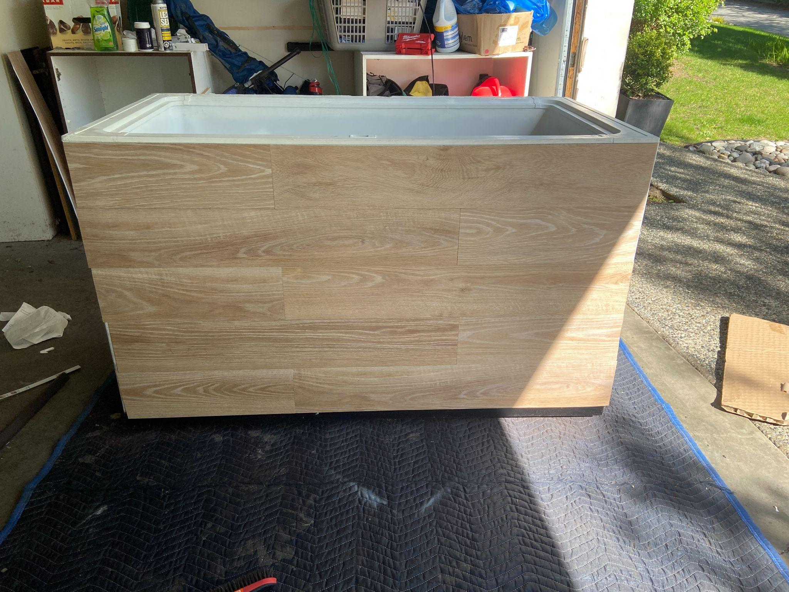
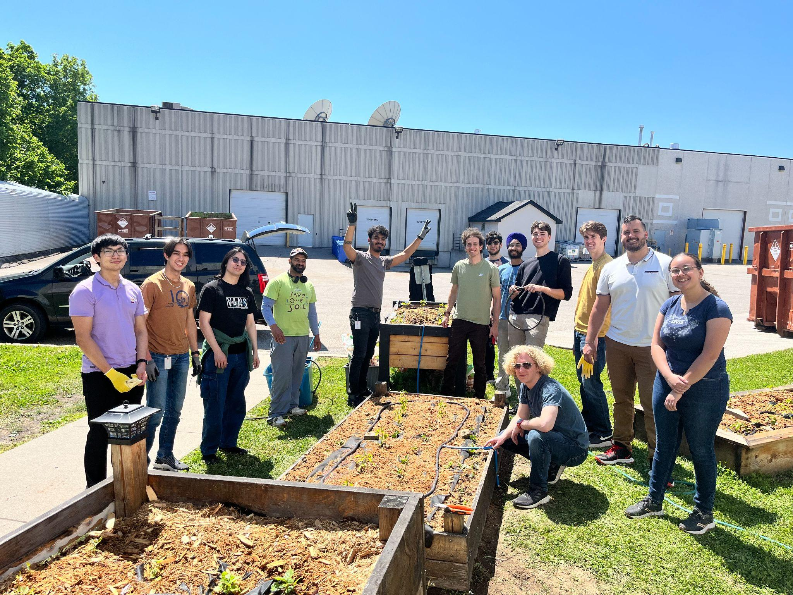

Project
QRET Avionics Architecture
Distributed avionics firmware for a hybrid rocket — the CAN protocol, shared libraries, and subsystem integration that five hardware teams built on. Two years, 152 commits, three major protocol versions.

The Problem
You have STM32 nodes spread around a rocket and an ESP32 handling communications. They all need to share data, log events, and save telemetry to flash. If every developer writes their own CAN implementation from scratch, you end up with incompatible packet formats, timing bugs, and dropped messages.
Network code is the last thing you want to be debugging when you're supposed to be reading a pressure sensor or firing an actuator.
What I Built
I designed the CAN protocol and firmware architecture that five subsystem teams built on over two years. The network had to be narrow and predictable — fixed queues, no dynamic memory, and a locked-down packet structure so everyone agrees on exactly what a message looks like.
The Protocol
AimNetwork is the core abstraction. Packet structure is locked down: 3 bits for origin, 3 bits for destination, 4 bits for packet type. Payload is always 64 bits, either raw data or a timed format that packs a 27-bit timestamp with a 32-bit value. v0.7.0 protocol migration (July 2026)
The STM32 CAN core uses no dynamic memory — fixed 16-frame TX and RX queues, max 8 iterations per poll cycle to prevent infinite loops if the bus gets flooded. The driver talks directly to the HAL for precise control over hardware mailboxes and detailed error telemetry like dropped queues and bus-off events. CAN core hardening (June 2026)
Shared Infrastructure
av-libraries is the shared foundation — communication, logging, and storage infrastructure so
developers can focus on application logic.
- AimLogger: Lightweight logger with timestamps and severity (DEBUG-ERROR), thread-safe mutex serialization
- AimFlashStorage: Telemetry storage to SPI NOR flash via LittleFS, serial extraction protocol for post-flight data. SPI transaction safety (Aug 2026)
- RDES3 compression: Realtime Deviation Encoding Scheme for telemetry compression with C/C++ static inline library and Python FFI bindings. RDES3 implementation (Aug 2026)
- Dynamic rate switching: Event-based rate changes for LaunchDetect and LowPower modes. High data rate support (Aug 2026)
- Health monitoring: Heartbeat table tracking which nodes are alive, automatic time synchronization across the bus
Pre-Launch Hardening (Aug 18-19, 2026)
The day before the pad build, I made hard calls: reverted ISR logging that could stall the CAN driver, locked down dynamic rate switching to fixed-rate jobs, added 10-second watchdog timers armed after init, and configured flash logging for critical telemetry. Pre-launch build commit (Aug 18, 2026)

These weren't features — they were reliability decisions under time pressure. The ISR logging worked fine in testing, but on the pad you can't afford a CAN TX interrupt that blocks because it's trying to format a log message.
The Subsystems
Five repositories, each a flight computer node with its own hardware and firmware, all speaking the same protocol:

GPS Recovery
SAM-M10Q receiver on daughter board, 3D flight logging, post-recovery trajectory reconstruction. Fixed critical I2C stream bug where SAM-M10Q's 0xFF pad bytes corrupted the NMEA parser. Details →
Power Module
ORed 24V input, DC-DC buck to 3.3V/5V rails. Found zener shunt bug during bench bring-up. 12-bit ADC with constexpr calibration. Details →
Propulsion Control
Upper (ESP32) and Lower (STM32) control modules for valve actuation and pressure monitoring. 5-minute server timeout, LowPower safe defaults, 1 Mbps CAN. Details →
Telemetry & LoRa
LoRa downlink at 904.5 MHz, 500kHz/SF10. Binary 13B-fast/5B-slow wire format, QLCP uplink to ground station. Details →
Altimeter
KX134 high-G accelerometer, Kalman filter fusing baro + accel for altitude estimate, launch detection algorithm.
Protocol Evolution
The network evolved through three major versions as we learned what actually mattered:
- v0.4.x (2024): Initial CAN implementation, basic message passing
- v0.6.x (June 2026): 29-bit protocol with content-based addressing, node convention cleanup. v0.6.x migration
- v0.7.x (July-Aug 2026): Catalog remap, dynamic rate switching, power FETs, event-based telemetry modes. v0.7.0 migration
Each migration touched all five subsystem repos. The v0.7.x series alone had five release candidates (v0.7.0, v0.7.1, v0.7.2) as we discovered real constraints during integration testing.
What I Learned
Distributed systems are hard, and when the nodes are physically separated by a rocket airframe running a hybrid motor, the debugging loop gets expensive fast. The tight constraints (no dynamic memory, fixed queues, ISR-safe everything) felt limiting at first but turned into an advantage — when something broke, the failure modes were predictable.
Pre-launch hardening taught me that "works in testing" and "works on the pad" are different standards. ISR logging, dynamic rate switching — both fine features in isolation, both cut before launch because the risk wasn't worth it.
The protocol evolution showed me the value of versioned, locked-down interfaces. When five teams are building hardware in parallel, you can't have the network spec changing underneath them. v0.7.0 took two months to stabilize across all repos, and that was with the protocol locked down.
Key Stats
- 152 commits to av-libraries alone
- 5 subsystem repositories coordinated
- 3 major protocol versions (v0.4.x → v0.6.x → v0.7.x)
- 2 years from initial design to pre-launch
- Aug 18-19, 2026 pre-launch hardening window
Repository Links
- av-libraries (shared infrastructure)
- av-recovery (GPS & Altimeter)
- av-power (Power Module)
- av-prop (Propulsion Control)
- av-telemetry (Comms & Ground Station)
Technical Highlights
CAN Protocol Structure
// 29-bit CAN ID layout (v0.7.x)
// [28:26] Origin (3 bits)
// [25:23] Destination (3 bits)
// [22:19] Packet Type (4 bits)
// [18:0] Subject/Data (19 bits)
// Fixed-size payload: 64 bits
// Option 1: Raw int64
// Option 2: Timed (27-bit timestamp + 32-bit value)STM32 CAN Driver Constraints
// No dynamic memory
static Frame s_txQueue[16];
static Frame s_rxQueue[16];
// Bounded poll cycle
const uint8_t kMaxPollIterations = 8;
// ISR-safe logging removed pre-launch
// (Aug 18, 2026 - see commit 07ef3fa)